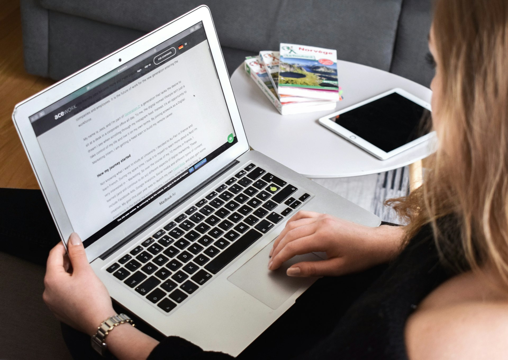

Quels types de problèmespeuvent être résolus en ligne ?
Dépannage logiciel :
Notre service de dépannage informatique en ligne couvre une large gamme de problèmes informatiques, incluant : Dépannage logiciel : Assistance pour les erreurs logicielles, les plantages d’applications, les logiciels bloqués, et les problèmes de compatibilité.
Problèmes de performance :
Optimisation des systèmes lents, nettoyage de fichiers temporaires, et amélioration de la vitesse de votre ordinateur.

Sécurité et virus :
Suppression de virus, de logiciels malveillants, et installation de solutions de sécurité pour protéger vos données. Problèmes de connexion : Résolution des problèmes de Wi-Fi, de connexion réseau, et de synchronisation avec des périphériques.

Disponibilité et flexibilité
Nos experts sont disponibles pour intervenir sur vos appareils à distance, vous offrant une solution rapide et adaptée à vos besoins.
Formations Informatiques
Nous offrons des formations informatiques personnalisées pour vous aider à maîtriser l'utilisation de vos appareils. Ces formations sont disponibles à geneve, zurich, et dans les communes environnantes. Que vous souhaitiez apprendre à utiliser un nouveau logiciel ou comprendre comment mieux protéger vos données, nos experts sont là pour vous accompagner dans toutes vos demandes.